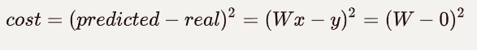

一些思考
看了一些机器学习的教程，发现数学在这一块非常重要，想学好必须先把数学学好，所以先不着急学习更加深奥的内容，先把以目前的数学知识可以实现的东西去实现一下吧。
了解了一些知识，比如梯度下降，梯度下降属于一种优化方法，主要用于神经网络领域里。梯度下降里面的梯度就是所学的求导求微分。
有个误差方程，用于比较计算出来的值（预测值）与数据集(实际值)中的值有多大差别。
类似于高中线性回归学的那个误差方程，不过这个肯定更加复杂。
常用平方差
- 
最终简化成最后的那样
在最简单的二次函数中，就是求导数为0的点，也就是极值。
在任意一点做切线，如果导数值不为0，则沿着过这点的切线下降，然后再找一个点，最后下降到导数为0的点，我理解的这就是梯度下降的概念。
当然这是最简单的，神经网络中的W可不止一个
而且也不止一个导数为0的点，这时候有全局最优的点，也有局部最优的点。
W的初始点不同，对应的最优解也不一样。
还有一个重要概念，叫做激活函数。
它用来解决线性方程无法解决的问题。
一般线性方程可以用y=Wx来表示
激活函数就是通过一些手段，把它掰弯
常用的有线性整流函数``Sigmoid函数``双曲正切函数等
他们使输出结果y变弯了
还有误差反向传播，我理解就是将误差反向传播回去，再进行训练，直到误差最小，通过这个过程达到训练的目的。